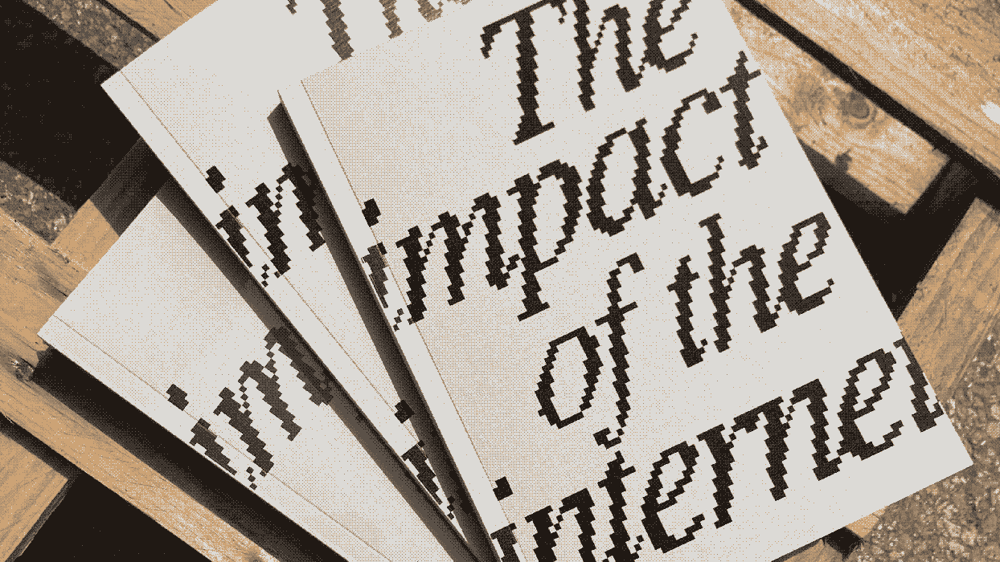
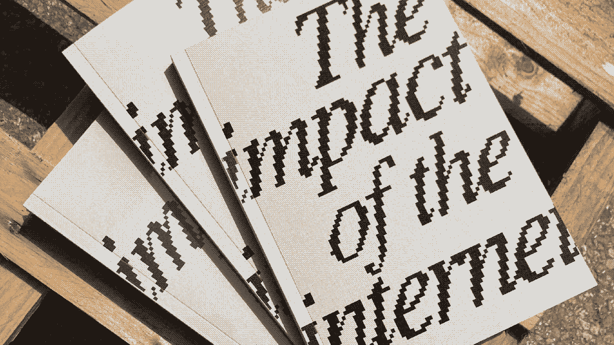

↓ PROJECTS
| Year | Title | Type | Collaboration |
|---|---|---|---|
| 2024 | Public futures. Data. Rights. Design. | Research, Editorial | Gianni Sinni, Irene Sgarro |
| 2024 | Arcipelaghi digitali. Cartografia dei servizi Iuav | Publication | EDU, Iuav |
| 2024 | Nessi. Appunti per l'ecosistema dell'università | Editorial | Gianni Sinni, Irene Sgarro |
| 2024 | Eart-rosion: satellite views are point of views | Publication | Emma Zerial, 2CO4 Barcelona |
| 2024 | Design per l’emergenza: soluzioni low-tech adattive al cambiamento climatico | Research, Workshop | Carmel Leonardi, Criticity |
| 2024 | Modello web per imprese sociali | Research, Digital | Iuav Venezia |
| 2024 | Waste driven UI | Research, Workshop | CTRL+JUNK LAB, Iuav Venezia |
| 2024 | Comunicare la sostenibilità | Workshop | Studio Visuale, Fondazione IUAV |
| 2024 | Criticity sustainable platform | Digital | Criticity |
| 2023 | The impact of the internet | Research, Editorial | - |
| 2023 | Corte te | Workshop | Criticity |
| 2023 | Urban parassitism | Workshop | Criticity |
| 2022 | get lost, elsewhere | Digital, Photography | - |
| 2021 | Thijs Verhaar.nl | Digital | Knitwear Lab |
| 2021 | Out of blue | Digital | Knitwear Lab |
| 2021 | Sperimentale. Pratico. Interdisciplinare. | Digital | ISIA Firenze |
| 2021 | Flexible Visual Identity: ISIA Student Show | Digital | ISIA Firenze |
| 2021 | Best waste, no waste | Service | Alia Toscana, ISIA Firenze |
| 2020 | Don't consider it waster | Digital, Photography | Rifò-Lab |
| 2020 | Do you really need it? | Digital | Rifò-Lab |
| 2020 | Recycled clothes | Digital, Photography | Rifò-Lab, Museo del tessuto |
| 2020 | Etichetta trasparente | Digital, Editorial | Oxfam Italia |
| 2020 | There is no plan bee | Editorial | Fondazione Eni Enrico Mat... |
| 2020 | Bauhaus100 | Editorial | ISIA Firenze |
| 2020 | There is no plan bee | Publication | AND Architettura |
| 2020 | Food and Design – The Ecological Transition of Goods | Publication | Equilibri. Il Mulino |
| 2019 | Comunicare l'economia | Editorial | - |
Bio
Giovanni Foppiani, designer and researcher at Università Iuav di Venezia, explores ecological and social interactions within techno-social ecosystems. His work focuses particularly on digital sustainability and social innovation. He collaborates with eco-socially conscious brands, collectives, and associations to enhance their communication capabilities.
PLEASE NOTE:
This is not my official portfolio but rather a web-repository of lost-and-found links of my work.
According to Web Carbon Calculator this web-page emits only 0.19g of C02, 5 times less than sending a simple email.
Last update: 02/12/2024